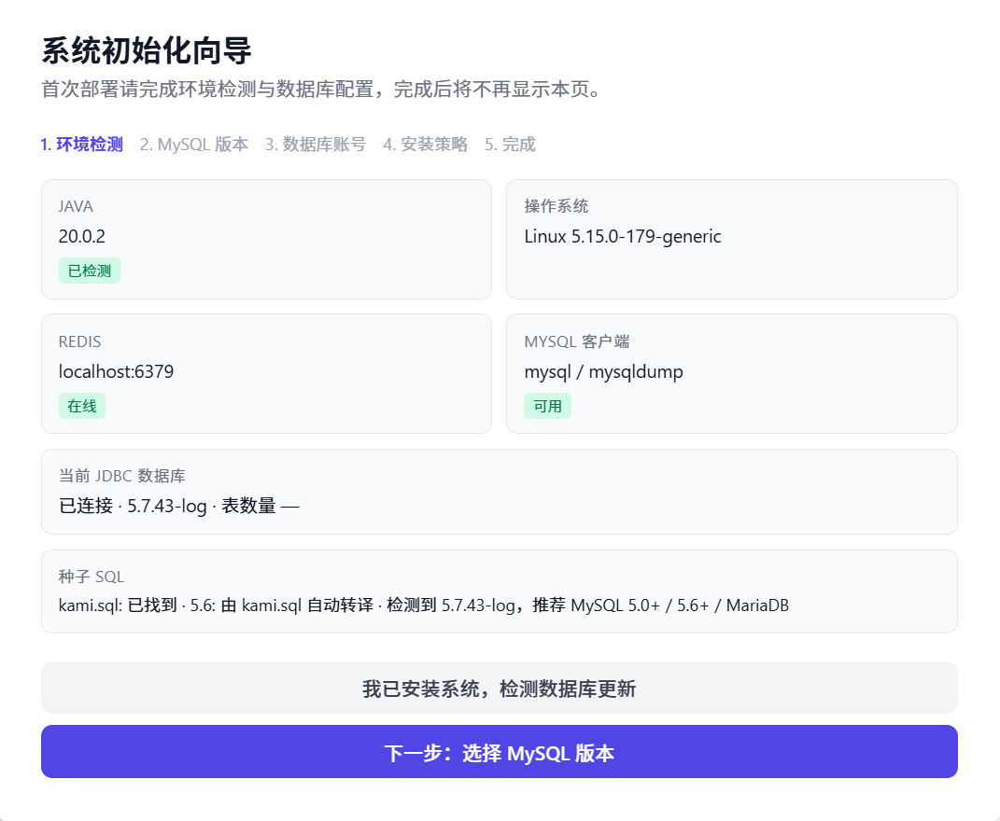
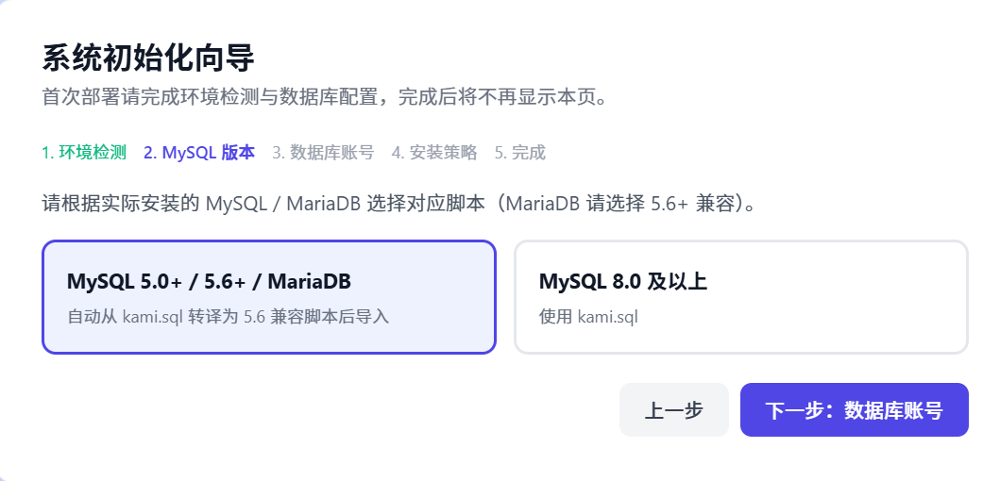

小小怪卡密验证系统 Pro
全新一代卡密验证解决方案，完全免费开源。本教程将带你从零完成系统部署与使用。
视频教程
跟随视频一步步完成小小怪卡密的安装与配置。
若视频无法播放，请前往 B 站观看： BV1Hs766FE4j
环境要求
部署前请确认服务器满足以下条件。
| 组件 | 版本要求 | 说明 |
|---|---|---|
| 操作系统 | CentOS 7+ / Debian 10+ / Ubuntu 20.04+ | Linux 服务器（推荐） |
| JDK | 17+（推荐 20） | 后端运行环境 |
| MySQL | 8.0 或 5.6+ | 支持 MariaDB（5.6+ 兼容模式） |
| Redis | 任意稳定版 | 缓存服务 |
| Nginx | 任意稳定版 | 反向代理与静态资源 |
| Node.js | 18+（可选） | 自行构建前端时需要 |
工作流教程
以下流程基于宝塔面板部署，按顺序完成即可上线小小怪卡密系统。
安装宝塔面板
在服务器上安装宝塔面板，作为后续部署的管理入口。
- 安装宝塔 前往 宝塔官网 获取对应系统的安装命令，在服务器终端执行并完成初始化。
- 登录面板 安装完成后记录面板地址、用户名与密码，通过浏览器登录宝塔面板。
环境准备
登录宝塔面板后，在「软件商店」中安装以下组件。
- Java — 必须安装 JDK 17 或更高版本（推荐 JDK 20）
- MySQL — 8.0 或 5.6 及以上（MariaDB 请选择 5.6+ 兼容）
- Nginx — 用于反向代理与静态资源托管
- Redis — 用于缓存
- Node.js — 如需自行构建前端时安装
获取安装包
可通过 QQ 群文件或开源仓库两种方式获取部署文件。
方式一：群文件下载
加入官方 QQ 群 1050160397，在群文件中下载最新安装包（含 dist.zip 与后端 jar 包）。
方式二：开源仓库下载
| 类型 | 地址 |
|---|---|
| 国内开源（Gitee） | gitee.com/xiaoxiaoguai-yyds/xxgkami-pro |
| 国外开源（GitHub） | github.com/xxg-yyds/xxgkami-pro |
| 部署教程 | doc.xxgkami.com |
| 演示站 | demo.xxgkami.com |
也可在 GitHub Releases 页面直接下载编译好的 dist.zip 与 backend-0.0.1-SNAPSHOT.jar。
上传与解压
将前端与后端文件上传至服务器对应目录。
- 上传 dist.zip 在宝塔「文件」管理中，进入网站根目录（如 /www/wwwroot/你的域名/），上传 dist.zip 并解压。
- 上传后端 Jar 将 backend-0.0.1-SNAPSHOT.jar（或重命名后的 xxgkami-pro.jar）上传至服务器，建议放在独立目录便于管理。
编辑 Jar 配置
修改后端 Jar 包内的数据库等连接配置。
- 用压缩软件打开 Jar Jar 本质是 zip 格式，使用 WinRAR、7-Zip 等工具直接打开 backend-0.0.1-SNAPSHOT.jar，无需先解压整个文件。
-
编辑配置文件
找到并编辑路径：
配置 MySQL 数据库连接、Redis 地址等参数，保存后关闭压缩软件（会自动更新 Jar 内文件）。数据库版本支持 MySQL 8.0 或 5.6+，具体导入方式可在首次访问时的系统初始化向导中选择。BOOT-INF\classes\application.properties - 手动导入（可选） 若跳过向导，也可在 MySQL 中手动创建数据库并导入 kami.sql。使用 MySQL 5.6 / MariaDB 时，系统会在初始化时自动转译为兼容脚本。
添加 Java 项目
在宝塔面板中创建 SpringBoot 项目并启动后端服务。
- 进入 Java 项目管理 在宝塔左侧菜单点击「网站」→「Java 项目」。
- 添加 Java 项目 点击「添加 Java 项目」，按以下参数填写：
| 配置项 | 填写说明 |
|---|---|
| 项目类型 | SpringBoot |
| 项目 Jar 路径 | 选择上传的 xxgkami-pro.jar 或 backend-0.0.1-SNAPSHOT.jar |
| 项目端口 | 默认 8080（如有冲突请修改此处或配置文件） |
| 启动用户 | root |
| 守护进程 | 勾选「项目意外停止时自动重启」 |
| 域名 | 填写您的域名 |
确认无误后点击「提交」，等待项目启动成功。
配置 Nginx 反向代理
为网站添加 API 反向代理，使前端能正常访问后端接口。
- 打开网站配置 在宝塔「网站」中找到您的站点，点击「设置」→「配置文件」。
-
定位插入位置
找到如下静态资源缓存配置块：
location ~ .*\.(gif|jpg|jpeg|png|bmp|swf)$ { expires 30d; error_log /dev/null; access_log /dev/null; } -
在其下方添加 API 代理
location /api/ { proxy_pass http://127.0.0.1:8080/api/; proxy_set_header Host $host; proxy_set_header X-Real-IP $remote_addr; proxy_set_header X-Forwarded-For $proxy_add_x_forwarded_for; # 禁用缓存，防止 API 数据不刷新 add_header Cache-Control "no-cache, no-store"; } - 保存并生效 点击「保存」，Nginx 会自动重载配置。访问您的域名，首次打开将进入系统初始化向导完成数据库配置。
系统初始化
前后端部署完成并访问站点后，首次打开会进入「系统初始化向导」。向导将自动检测运行环境并完成数据库配置，完成后不再显示本页。
环境自动检测
向导第一步会自动检测当前服务器环境，无需手动填写。

检测项包括：
| 检测项 | 说明 |
|---|---|
| JAVA | 自动识别已安装的 JDK 版本 |
| 操作系统 | 显示当前 Linux 内核版本 |
| REDIS | 检测 Redis 是否在线（如 localhost:6379） |
| MySQL 客户端 | 检测 mysql / mysqldump 是否可用 |
| 当前 JDBC 数据库 | 读取 application.properties 中的连接，显示版本与表数量 |
| 种子 SQL | 检测 kami.sql 是否存在，并根据数据库版本给出推荐选项 |
数据库版本选择
第二步根据实际安装的 MySQL / MariaDB 版本选择对应脚本，系统提供两种方式。

MySQL 5.0+ / 5.6+ / MariaDB
自动从 kami.sql 转译为 5.6 兼容脚本后导入。适用于 MySQL 5.6、5.7 及 MariaDB 等较低版本环境。
MySQL 8.0 及以上
直接使用 kami.sql 原文件导入，适用于 MySQL 8.0+ 环境。
一键脚本安装
适用于 CentOS 7+ / Debian 10+ / Ubuntu 20.04+，全自动配置 JDK、MySQL、Nginx 等环境。推荐首选此方式。
国内服务器（Gitee 源）
curl -O https://gitee.com/xiaoxiaoguai-yyds/xxgkami-pro/raw/master/install.sh && chmod +x install.sh && sudo ./install.sh海外服务器（GitHub 源）
curl -O https://raw.githubusercontent.com/xxg-yyds/xxgkami-pro/refs/heads/master/install.sh && chmod +x install.sh && sudo ./install.sh本地文件部署
适用于无法在服务器编译、或希望直接上传制品快速上线的场景。
- 获取部署文件 从 GitHub Releases 下载最新的 backend.jar 和 dist.zip，或在官方 QQ 群（1050160397）获取。
- 数据库初始化 首次访问站点，通过系统初始化向导完成数据库导入。支持 MySQL 8.0 或 5.6+，也可手动导入 kami.sql。
-
启动后端
默认监听 8080，上下文路径为 /api。nohup java -jar backend.jar > backend.log 2>&1 & - 部署前端 将 dist.zip 解压到网站根目录（如 /www/wwwroot/your-domain/）。
-
配置 Nginx
location /api { proxy_pass http://127.0.0.1:8080; }注意：proxy_pass 末尾不要加 /，否则会去掉 /api 前缀导致 404。
手动编译部署
适用于开发者或需要深度定制的场景。前提：JDK 20+、Maven 3.8+、Node.js 18+、MySQL 8.0 或 5.6+
克隆代码
git clone https://github.com/xxg-yyds/xxgkami-pro.git
cd xxgkami-pro后端编译
cd backend
# 修改 src/main/resources/application.properties 中的数据库配置
mvn clean package -DskipTests
java -jar target/backend-0.0.1-SNAPSHOT.jar前端编译
cd ../
npm install
npm run build
# 构建产物位于 dist/ 目录，使用 Nginx 托管管理员后台
提供完整的卡密管理与系统配置能力。
数据概览
实时统计面板，掌控全局数据
卡密管理
批量生成、导出、状态管理，支持时间卡/次数卡
订单管理
订单实时监控、状态跟踪、补单操作
API 管理
接口密钥生成、权限控制、WebHook 回调
安全中心
IP 黑白名单、一机一码、访问日志审计
系统设置
网站信息、支付接口、邮件通知配置
用户中心
面向终端用户的卡密购买与验证功能。
购买中心
在线选购卡密，支持多种支付方式
卡密验证
快速验证卡密有效性，查看使用说明
我的卡密
已购卡密历史记录，一键复制
开发者 API
提供标准化 RESTful 接口，支持卡密核销、状态查询、WebHook 回调，API Key 签名认证保障安全。
# 卡密核销示例 (GET)
curl "https://your-domain.com/api/open/use_card?api_key=YOUR_KEY&card_key=YOUR_CARD&machine_code=DEVICE_ID"常见问题
API 请求返回 404？
检查 Nginx 配置中 proxy_pass 末尾是否多加了 /。后端 context-path 为 /api，必须保留该前缀。
旧版 GitHub 仓库还能用吗？
旧地址 xiaoxiaoguai-yyds/xxgkami-pro 已失效。请使用新仓库： xxg-yyds/xxgkami-pro
如何获取最新编译包？
前往 GitHub Releases 下载，或加入官方 QQ 群 1050160397 获取。
联系我们
官方网站
体验地址
QQ 交流群
1050160397（售后 / 技术支持）
联系邮箱
xxgyyds@vip.qq.com